Common Lisp the Language, 2nd Edition

Transducers compute series from series and form the heart of most series
expressions. Mapping is by far the most common transducer. This section
presents a number of additional simple transducers.
[Function]
cotruncate &rest series-inputs
until bools &rest series-inputs
until-if pred &rest series-inputs
Each of these functions accepts one or more series inputs S1, ..., Sn as its &rest argument and returns n series
outputs T1, ..., Tn that contain the same elements in the same
order-that is, Ti =Si.
Let k be the length of the
shortest input Si. cotruncate truncates the series so that
each output has length k. Let 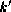 be the position of the first element
in the boolean series bools that is not nil or, if every
element is nil, the length of bools. until truncates the
series so that each output has length (min k ).
Let 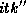 be the position of the first element in S1 such that
(pred S1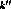)
is not nil or, if there is no such
element, the length of S1. until-if truncates the series so
that each output has length (min k 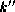).
=Si.
Let k be the length of the
shortest input Si. cotruncate truncates the series so that
each output has length k. Let 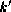 be the position of the first element
in the boolean series bools that is not nil or, if every
element is nil, the length of bools. until truncates the
series so that each output has length (min k ).
Let 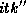 be the position of the first element in S1 such that
(pred S1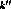)
is not nil or, if there is no such
element, the length of S1. until-if truncates the series so
that each output has length (min k 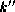).
(cotruncate #Z(1 2 -3 4) #Z(a b c)) => #Z(1 2 -3) and #Z(a b c) (until #Z(nil nil t nil) #Z(1 2 -3 4) #Z(a b c)) => #Z(1 2) and #Z(a b) (until-if #'minusp #Z(1 2 -3 4) #Z(a b c)) => #Z(1 2) and #Z(a b)
[Function]
previous items &optional (default nil) (amount 1)
The series returned by previous is the same as the input series items except that it is shifted to the right by the positive integer amount. The shifting is done by inserting amount copies of default before items and discarding amount elements from the end of items.
(previous #Z(10 11 12) 0) => #Z(0 10 11)
[Function]
latch items &key :after :before :pre :post
The series returned by latch is the same as the input series items except that some of the elements are replaced by other values. latch acts like a latch electronic circuit component. Each input element causes the creation of a corresponding output element. After a specified number of non-null input elements have been encountered, the latch is triggered and the output mode is permanently changed.
The :after and :before arguments specify the latch point. The latch point is just after the :after-th non-null element in items or just before the :before-th non-null element. If neither :after nor :before is specified, an :after of 1 is assumed. If both are specified, it is an error.
If a :pre is specified, every element prior to the latch point is replaced by this value. If a :post is specified, every element after the latch point is replaced by this value. If neither is specified, a :post of nil is assumed.
(latch #Z(nil c nil d e)) => #Z(nil c nil nil nil) (latch #Z(nil c nil d e) :before 2 :post t) => #Z(nil c nil t t)
[Function]
collecting-fn type init function &rest series-inputs
The higher-order function collecting-fn supports the general concept of a simple transducer with internal state. The type argument is a type specifier indicating the type of values returned by function. The values construct can be used to indicate multiple types; however, type cannot indicate zero values. If type indicates m types 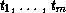, then collecting-fn returns m series T1, ..., Tm, where Ti has the type (series 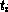). The arguments init and function are functions. The remaining arguments (if any) are all series. Let these series be S1, ..., Sn and suppose that Si has the type (series 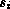).
The init must be of type (function () (values 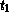 ... 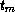)).
The function must be of type
(function ( ... 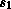 ... ) (values ... ))
The length of each output is the same as the length of the shortest input. If there are no bounded series inputs, the outputs are unbounded. The elements of the Ti are computed as follows:
(values T1 ... Tm) == (multiple-value-call function (funcall init) S1 ... Sn) (values T1
If init or function has side effects, it can count on being called in the order indicated by the equations above. However, given the lazy evaluation nature of series, these functions will not be called until their outputs are actually used (if ever). In addition, no assumptions can be made about the relative order of evaluation of these calls with regard to execution in other parts of a given series expression. The second example below computes a series of partial sums of the numbers in an input series. The third example computes two output series: the partial sums of its first input and the partial products of its second input.
(defun running-averages (float-list)
(multiple-value-call #'map-fn
'float #'/
(collecting-fn '(values float integer)
#'(lambda () (values 0.0 0)
#'(lambda (s n x) (values (+ s x) (+ n 1))))
float-list)))
(collecting-fn 'integer #'(lambda () 0) #'+ #Z(1 2 3))
=> #Z(1 3 6)
(collecting-fn '(values integer integer)
#'(lambda () (values 0 1))
#'(lambda (sum prod x y)
(values (+ sum x) (* prod y)))
#Z(4 6 8)
#Z(1 2 3))
=> #Z(4 10 18) and #Z(1 2 6)